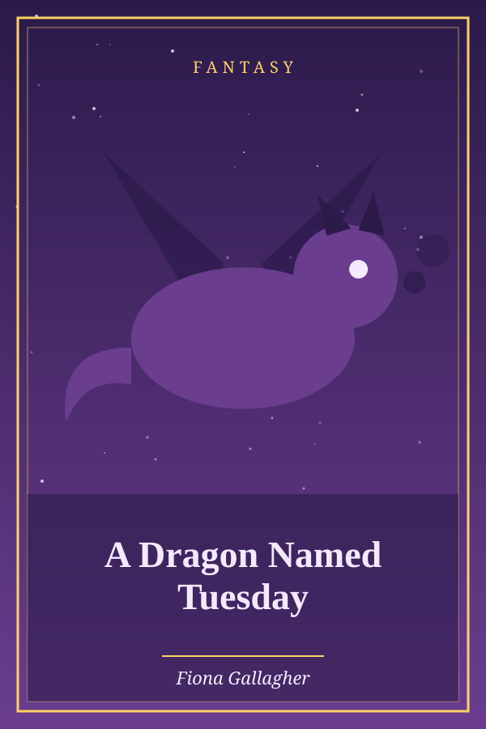

The Fox and the Crow
Genre: Comedy
Synopsis
A crow with a stolen piece of meat meets a fox who knows exactly how to flatter her.
Chapter 1: The Fox and the Crow
A Crow having stolen a bit of meat, perched in a tree and held it in her beak. A Fox, seeing this, longed to possess the meat himself, and by a wily stratagem succeeded. “How handsome is the Crow,” he exclaimed, “in the beauty of her shape and in the fairness of her complexion! Oh, if her voice were only equal to her beauty, she would deservedly be considered the Queen of Birds!” This he said deceitfully; but the Crow, anxious to refute the reflection cast upon her voice, set up a loud caw and dropped the flesh. The Fox quickly picked it up, and thus addressed the Crow: “My good Crow, your voice is right enough, but your wit is wanting.”